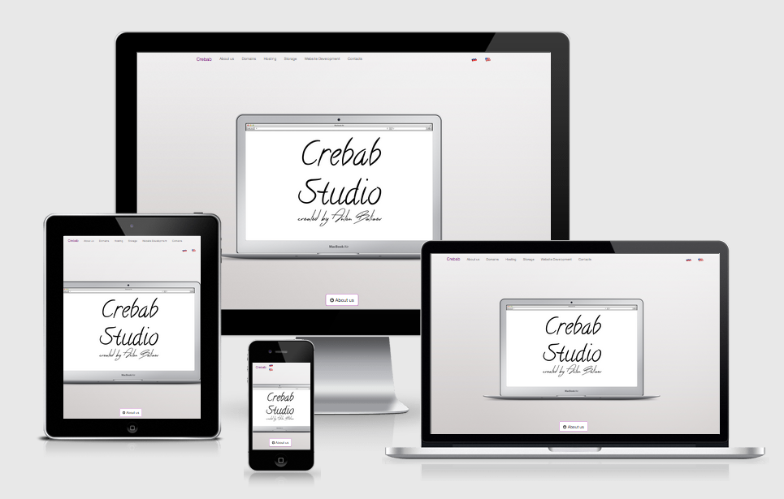
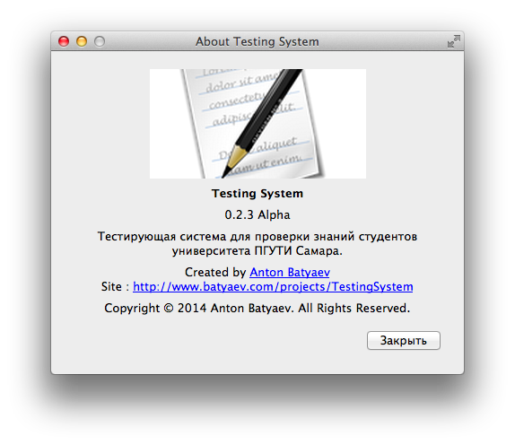

Skills
-
Languages:
Bash,Java,Groovy,C++,Ruby -
DBMS:
Postgres,Firebird,MSSQL,SQLite -
VCS:
git,svn -
Frameworks:
Angular,Bootstrap,Qt,Spring,Vaadin,Ruby on Rails, etc -
OS:
Linux,Mac OS,Windows -
Web servers:
Nginx,Apache,Tomcat -
Build systems:
Gradle,Maven,QMake,CMake -
Dev apps:
Vim + Tmux,IntelliJ IDEA,RubyMain,Qt Creator,GitLab,TeamCity,Jenkins,Jira,YouTrack,Chef,Puppet - and lot of another technologies...
Work Experience
-
Java Developer at Haulmont
November 2014 – currentCreate groovy scripts for reports. Prepare servers for deploy our application (Postgres, tomcat, ssh, apache, nginx..) and lot of another work
-
Resort Worker (J1) at GTLC (Grand Teton Lodge Company)
May 2014 – September 2014Work in the kitchen, Help to cooks and bartender, working in the employees dining room
-
C++ Software Developer at Atol
October 2012 – May 2014Development of cross-platform software specialized class Middle-office, occupying an intermediate position between Front-and Back-office and for operational management of objects of commercial enterprises. Optimization of server applications for speed and latency. Development of protocols for communicating with the handheld terminal with an integrated bar code laser scanner. Developing and maintaining a network between applications class front-office and middle-office. Development of GUI applications using Qt framework. Development of server-side part of application to work with databases Firebird, MS SQL, Sqlite. Writing *. sh and *. bat scripts for continuous integration server. (build binary files, creating installers for different operating systems linux \ windows, etc.). Code Review to validate source code, written other employees, for the quality, correctness, and compliance with coding style docs.
-
System Administrator at Dogma
May 2013 – August 2013Network management, small office (about 25 computers distributed between the four geographic locations in the two cities ). Administration ftp , samba, dns and dhcp servers based on Windows Server 2007, 2003. Remote control user computers based on the Linux operating system , configuring network printers, scanners . Control over the purchase of new equipment. Setting up a computer network office ( settings bridge over WiFi to a nearby building , analysis and formation of network card , configure remote access from a remote warehouse, etc. ). Management of access rights to connect to the server (a common work of employees on the server via RDP protocol)
-
Technical Support Engineer at MTS
July 2012 – October 2012Advising on cellular communication and mobile Internet. Solution of problems and software problems with the network on mobile phones. Providing information about the tariffs for mobile communication and services connected on telephone number.
Projects
Sherlock Taxi Management Solution

Introducing Sherlock - the next generation of taxi software. Based on years of experience as Addison Lee’s software developer, Haulmont Technology has launched Sherlock – the next generation taxi solution, featuring...
- A comprehensive, customisable taxi solution to support fleets from 100 to 10,000 vehicles - Sherlock provides a business-proven end-to-end system that supports every aspect of running large scale taxi businesses
- Multichannel, customer-centric booking engine for call centre agents, online bookings and a range of smartphone apps
- Dynamic allocation for automating fleet control – world’s most advanced real time dispatch system
- Low upfront costs and long term support and development – our simple licensing model is based on low monthly fees paid per vehicle
- Constantly updated and upgraded system – bi-annual updates to core systems keeps Sherlock at the cutting edge, without affecting local customisations
Frontol Manager

Frontol Manager - specialized software class Middle-office, occupying an intermediate position between Front- and Back- office and is designed for efficient management of existing retail businesses. Frontol Manager allows you to manage and administer the cash line , as well as equipment on the trading floor ( scales with label printing ) , control activities and carry out the transfer of data between all nodes in the system , and perform and record the transactions associated with the movement of material assets of the enterprise. And most importantly , FM consolidates information and automatically makes its bilateral exchange in sync between cash desks , back- office and equipment (scales) .
Crebab Studio
Startup where I working on commercial projects like creating websites, resale domains, sale hosting etc...
Testing System
Testing system for checking the residual knowledge to the students PSUTI university (Samara, Russia)
Fork meVK Java SDK
Java wrapper for REST API popular russian social network - vk.com
Fork meVk desktop notifier & chat
Linux desktop notifier about new messages and another events from social network vk.com
Fork mePersonal site
Look around, you are here! =)
Skill tests UpWork
- Top 10% Unix Shell Script Test
- Top 10% JDBC 2.1 Test
- Top 10% Twitter Bootstrap Test
- Top 20% Java Test v3
- Top 20% Enterprise Java Beans (EJB) 2.0 Test
- Top 20% Unix Test
- Top 30% PostgreSQL RDBMS Test
- Top 30% C++ Programming Test
- Top 30% LAMP Test
- Top 30% U.S. English Basic Skills Test
Cources (Massive Open Online Course)
Coursera
- Computer Science by Nick Parlante from Stanford University
- Introduction to Databases by Jennifer Widom from Stanford University
- Cryptography I by Dan Boneh from Stanford University
- Networked Life by Michael Kearns from University of Pennsylvania
- Internet History, Technology, and Security by Charles Severance from University of Michigan
- Programming for Everybody (Python) by Charles Severance from University of Michigan
- An Introduction to Interactive Programming in Python by Joe Warren, Scott Rixner, John Greiner, Stephen Wong from Rice University
Microsoft Virtual Academy
- An Introduction to Windows Azure (rus)
- An Introduction to Cloud Websites on Microsoft Azure (rus)
- An Introduction to Azure API Management (rus)
- Business and cloud best practices solutions (rus)
- Overview System Center Advisor (rus)
- System Center App Controller: Windows Azure (rus)
- C# part 1 (rus)
- C# part 2 (rus)
- Fundamentals of programming in C# (rus)
- Exciting programming C# (rus)
- Introduction to Private Cloud (rus)
- Introduction to games programming on Unity (rus)
- Introduction to the graphics library Win2D (rus)
- App development on Microsoft platform (rus)
- Microsoft Azure security overview and Sql Azure Databases (rus)
- Introduction to mobile app development (rus)
- Gamepad support in the development of computer games (rus)
- Microsoft Visio 2013 Overview (rus)
- Introduction to programming with Python (rus)
- Express dive into development of apps in JavaScript (rus)
- Data import in Microsoft Sql Server (rus)
- New possibilities System Center Operations Manager SP1 (rus)
- Debug a website with Internet Explorer F12 tools (rus)
- Start development with HTML5, JS and CSS3 (rus)
- Virtual Desktop Infrasturcture (rus)
- Application Insights (rus)
- Application development for Windows 8 on HTLP5/JS (rus)
- Application development for Windows 8 on XAML/C# (rus)
- Enterprise developer Jump Start (rus)
- New possibilties Ms Project 2013 and Project Online (rus)
- The development of modern apps in C# (rus)
- Service management Windows Azure (rus)
- Big Data (rus)
- Developing ASP.Net MVC4 web applications (rus)
- Developing universal windows apps with html and javascript Jump start (rus)
- Team Foundation Server 2010 (rus)
- System Center 2012 firstlook (rus)
- Development and implementation of enterprise applications (rus)
- Introduction to ASP.NET MVC (rus)
- Development difficult apps to Windows Store on HTML5: start (rus)
- Start development web apps using ASP.NET (rus)
- Gaming engines for Windows 8 Jump Start (rus)
- Crash course 'Programming in C#' (rus)
- Windows Server 2012 Virtualization (rus)
- The cloud environment for developing and testing applications (rus)
- The Microsoft hybrid cloud best practices guidance (rus)
- Advanced possibilities appdev Windows Phone 8 (rus)
Certificates
D-Link
- «Hardware firewalls from company D-link. Network security, VPN technology» by Alex Mokshanov
- «Build networks based on managed switches D-Link 2nd and 3rd level. Part 2: Configuring hardware» by Alex Mokshanov
- «Construction of video surveillance systems on the D-Link equipment» by Alex Mokshanov
- «Construction of the wireless Wi-Fi networks on the D-Link equipment» by Alex Mokshanov
Dr.Web
- DWCERT-030-11 «Antivirus Dr.Web» Business
- DWCERT-030-3 «Dr.Web for Mac OS X»
- DWCERT-030-5 «Dr.Web LiveCD (Dr.Web LiveUSB)»
- DWCERT-030-10 "Service «Antivirus Dr.Web» for home"
- DWCERT-030-6 "Dr.Web CureIt!"
- DWCERT-004 Dr.Web AV-Desk Internet Service
- DWCERT-002 Dr.Web Enterprise Security Suite
- DWCERT-001 Dr.Web® for Windows
Cisco Networking Academy
- CCNA Discovery 1: Networking for Home and Small Businesses
- CCNA Discovery 2: Working at a Small-to-Medium Business or ISP
- CCNA Discovery 3: Introducing Routing and Switching in the Enterprise
Others
- Overview of the technology 4G (LTE) by MTS company
- 2nd place diploma in the category «Programming» by PSUTI university
- Certificate of Achievement ACM/ICPC 2011 Saratov by ACM/ICPC